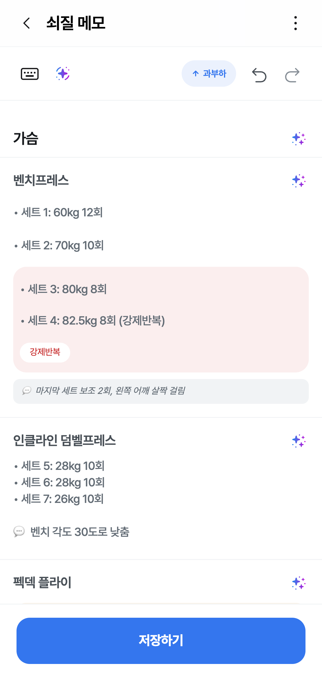
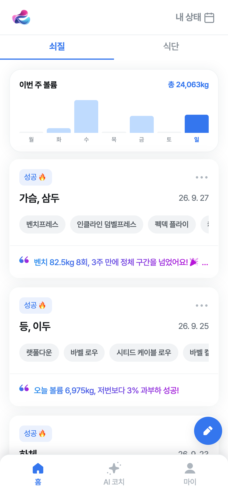
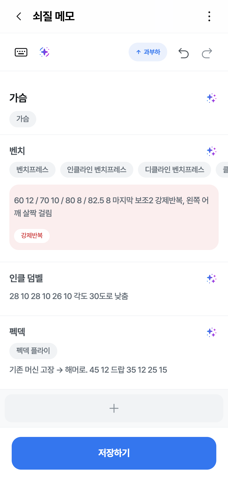
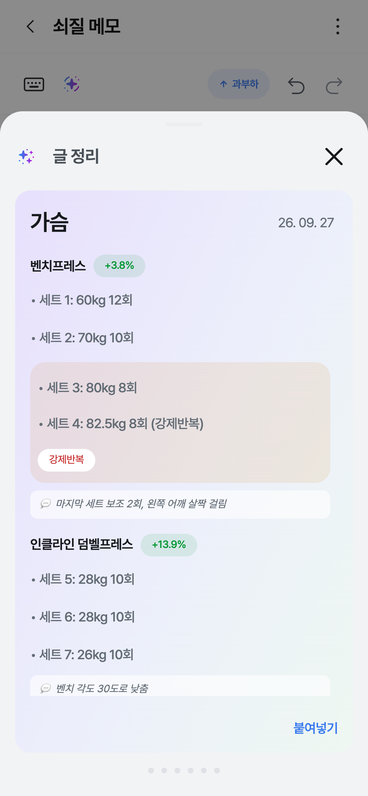
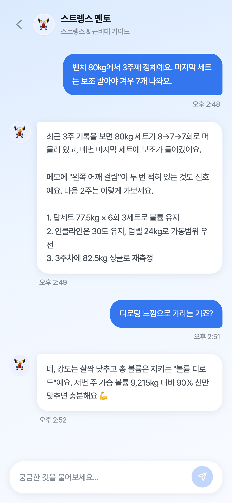

정교하게 기록하려는 사람일수록
정해진 칸보다 메모 한 줄이 더 정확한 기록이었어요.
지난주 벤치 무게를 찾는 데 평균 47초
응답자 11명 중 10명이 볼륨을 계산해 본 적 없음
벤치 · 벤프 · bench — 한 사람 메모에서 평균 3가지 표기
문제는 메모 자체가 아니라,
메모가 쌓여도 데이터가 되지 않는다는 점이었어요.
줄임말·숫자 나열 그대로, 메모장처럼 적어요
보조·드랍·기구 변경·특이사항을 버리지 않고 세트 옆에 남겨요
지난 기록과 종목별 무게·볼륨을 비교해 과부하를 알려줘요
앱의 구조와 메모장의 자유,
둘 중 하나를 고르지 않아도 되게 만들었어요.
만든 AI와 검사하는 AI를 분리해
혼자서도 코드 리뷰가 있는 개발 환경을 만들었어요.


보조가 들어간 세트를 강제반복으로 태그해
순수 성공 세트와 구분해요
통증·아쉬움은 해당 종목의 메모로 남아
다음 기록 때 다시 보여요
기구가 바뀌어도 같은 운동의 흐름으로
이어서 기록돼요

코드는 AI가 쓰고 고치지만,
무엇을 만들고 언제 내보낼지는 제가 결정해요.
기록 10건 중 6건에 보조·기구·컨디션 메모가 함께 남았고,
맥락을 버리지 않는 기록이 실제로 쓰인다는 걸 확인했어요.
기록의 본질은 편리함보다 정확함이라는 믿음으로,
이제 출시해서 증명해 보려고 해요.